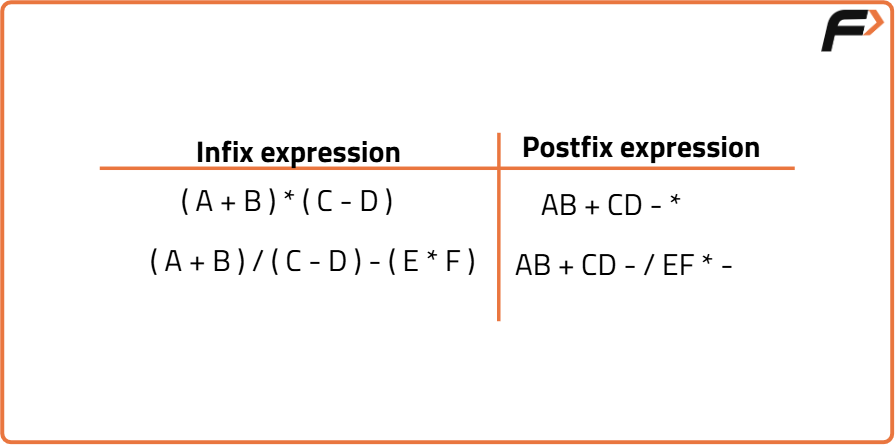

Infix to Postfix
Problem Statement: Given an infix expression, Your task is to convert the given infix expression to a postfix expression.
Examples
Example 1: Input: a + b * (c^d - e) ^ (f + g * h) - i Output: abcd^e-fgh*+^*+i- Explanation: The infix expression "a + b * (c^d - e) ^ (f + g * h) - i" is converted to postfix form as "abcd^e-fgh*+^*+i-" by applying the rules of infix to postfix conversion. Example 2: Input: (p + q) * (m - n) Output: pq+mn-* Explanation: The infix expression "(p + q) * (m - n)" is converted to postfix form as "pq+mn-*".
Disclaimer: It's highly recommend trying to solve it before looking at the solution.
Approach
Algorithm
- What is an infix expression?
- The traditional way of writing mathematical expressions is called infix expressions, where the operator is placed between two operands (e.g., A + B, (A * B) / Q).
- Infix expressions are easy for humans to understand, but computers find them difficult to parse because they require knowledge of operator precedence, associativity rules, and parentheses.
- To make it easier for computers, we use postfix and prefix notations.
- What is a postfix expression?
- A postfix expression has the operator placed after the operands (e.g., PQ-C/). It is written as
. - In postfix expressions, the precedence of operators is determined by the order in which they appear in the expression. The operator that appears first is applied to the operands.
- Postfix expressions do not require parentheses, making them easier for computers to evaluate.
- Approach to Convert Infix Expression to Postfix:
- Start by scanning the infix expression from left to right.
- If the scanned character is an operand, print it immediately.
- If the scanned character is an operator:
- If the precedence of the operator is greater than the operator in the stack, or the stack is empty, or the stack contains a ‘(’, push the operator into the stack.
- Otherwise, pop all operators from the stack with higher or equal precedence than the scanned operator, then push the scanned operator into the stack.
- If the scanned character is a ‘(’, push it into the stack.
- If the scanned character is a ‘)’, pop the stack and output the operators until a ‘(’ is encountered, and discard both parentheses.
- Repeat steps 2-5 until the entire infix expression has been scanned.
- Print the output.
- Finally, pop and print all remaining operators in the stack until it is empty.

Code
#include<bits/stdc++.h>
using namespace std;
// Function to return precedence of operators
int prec(char c) {
if (c == '^') // Exponent operator has highest precedence
return 3;
else if (c == '/' || c == '*') // Multiplication and division have higher precedence than addition
return 2;
else if (c == '+' || c == '-') // Addition and subtraction have lowest precedence
return 1;
else
return -1;
}
// The main function to convert infix expression to postfix expression
void infixToPostfix(string s) {
stack<char> st; // Stack to hold operators and parentheses
string result; // String to hold the resulting postfix expression
for (int i = 0; i < s.length(); i++) {
char c = s[i];
// If the scanned character is an operand, add it to the result string
if ((c >= 'a' && c <= 'z') || (c >= 'A' && c <= 'Z') || (c >= '0' && c <= '9'))
result += c;
// If the scanned character is an ‘(‘, push it to the stack
else if (c == '(')
st.push('(');
// If the scanned character is a ‘)’, pop from stack until an ‘(‘ is encountered
else if (c == ')') {
while (st.top() != '(') {
result += st.top();
st.pop();
}
st.pop(); // Pop the ‘(‘ from the stack
}
// If an operator is scanned
else {
while (!st.empty() && prec(s[i]) <= prec(st.top())) {
result += st.top();
st.pop();
}
st.push(c); // Push the current operator to the stack
}
}
// Pop all the remaining elements from the stack
while (!st.empty()) {
result += st.top();
st.pop();
}
cout << "Postfix expression: " << result << endl; // Output the result
}
int main() {
string exp = "(p+q)*(m-n)"; // Infix expression
cout << "Infix expression: " << exp << endl;
infixToPostfix(exp); // Convert the infix expression to postfix
return 0;
}Complexity Analysis
Time Complexity: O(N), where N is the length of the infix expression. Each character in the expression is processed once.
Space Complexity: O(N), where N is the length of the infix expression. The stack can hold at most N operators and parentheses in the worst case.